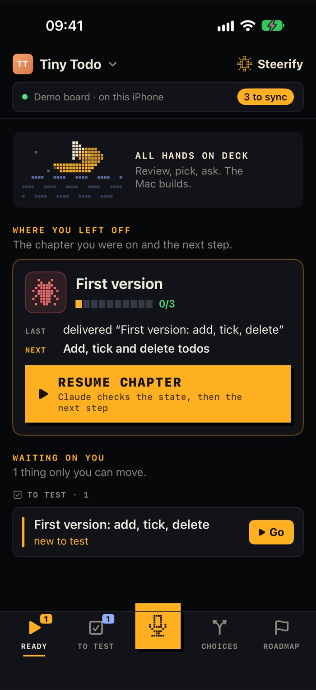
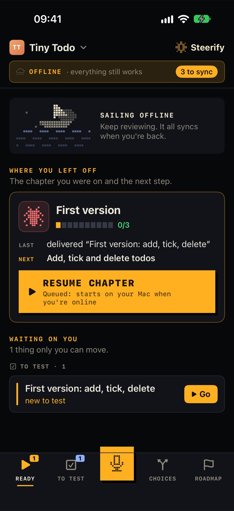
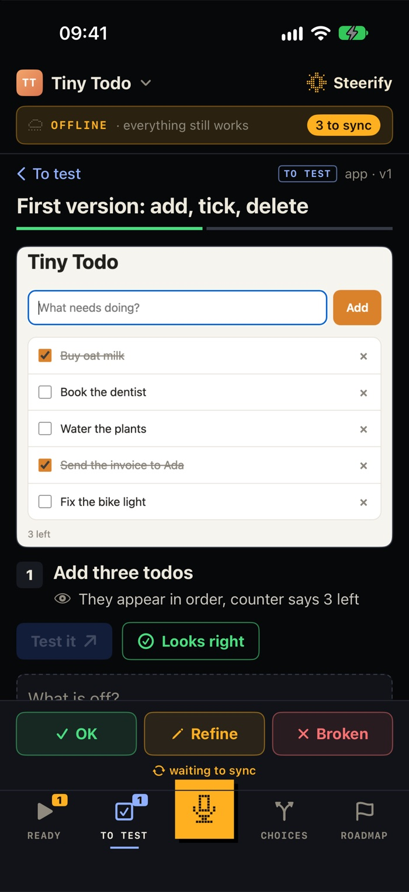
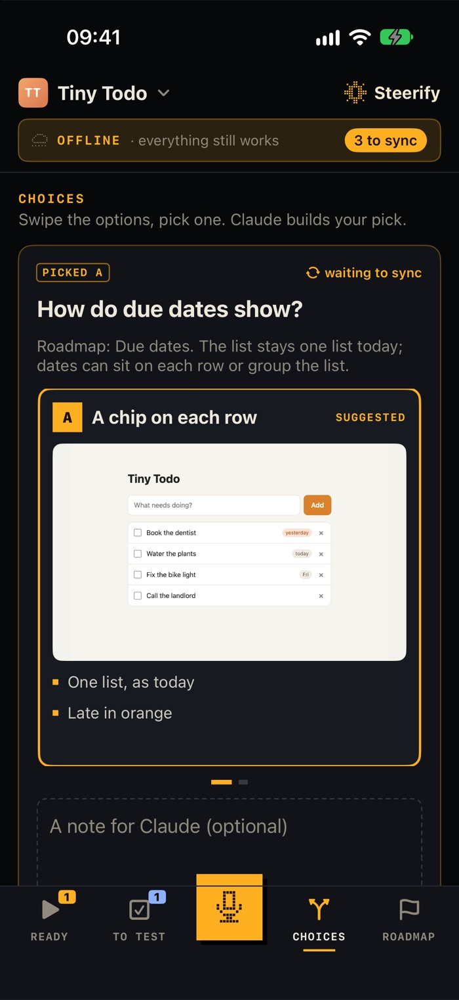
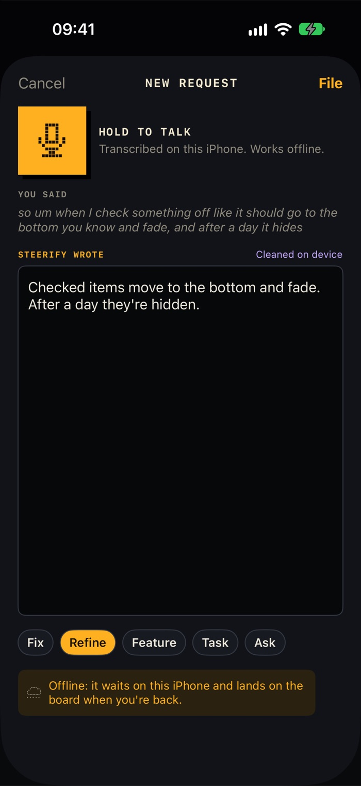
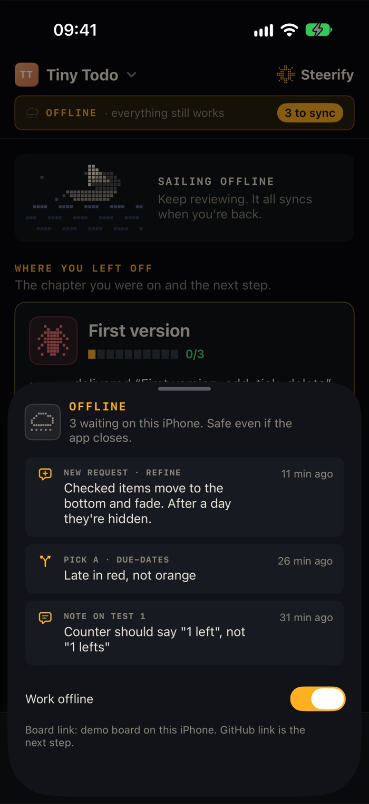
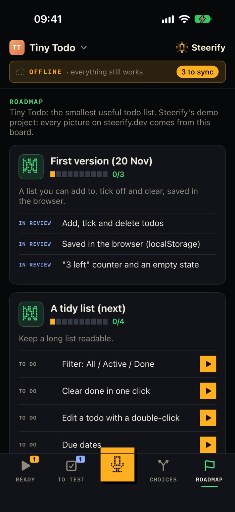

The board in your pocket, built for real: native SwiftUI, the Mac app's colours, labels and pixel art. Everything below is a screenshot of the app running in the iOS simulator on the demo project. No connection? Keep going: requests, notes, verdicts and picks wait on the iPhone and sync when you're back.
iPhone 18 Pro simulator, iOS 27. Same tokens as the Mac app, monospace caps labels, pixel icons drawn from the same 10×10 art, and the hard-shadow amber buttons.







GitHub stays the board's store: no second copy to keep in step. Our server adds what GitHub can't do: realtime. The phone always writes to its own outbox first, so it never needs a connection to work.
Ready, To test, Choices, Roadmap; request sheet; outbox. Reads the demo board in the real board format.
Verdicts, test notes, picks and requests go to an outbox on disk; the screens show them at once; "Work offline" switch.
Hold to talk, on-device transcription with project names, clean-up rules + Apple's on-device model when available.
Sign in, pick the repo, read the board and pictures, write the outbox into decisions.json / requests.json.
Push notifications, live session status, ▶ start on the Mac in real time.
Claude Code on the web on the same repo when the Mac is asleep.